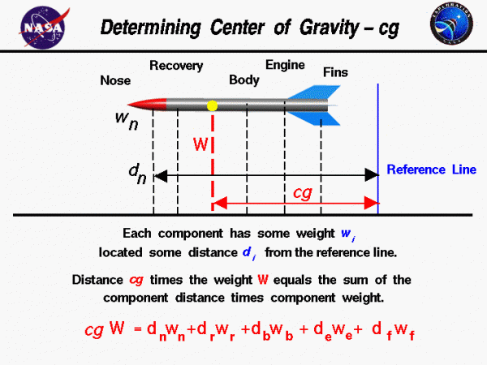
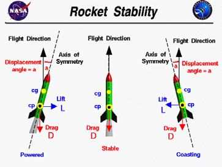

Estabilidad: centro de gravedad y centro de presión
Entender la estabilidad con una maqueta y comprobar que el modelo represente la distribución real de piezas.
Equilibrar la maqueta antes de ver símbolos
Sostén una maqueta inerte y busca el lugar donde puede quedar equilibrada. Ese punto se relaciona con la distribución de masa. Si cambias una pieza delantera por otra más pesada, el equilibrio puede desplazarse. La observación permite entender qué representa el centro de gravedad antes de escribir una fórmula.

En el programa se usa la abreviatura CG. Para un modelo pequeño, en condiciones terrestres habituales, podemos trabajar con la idea práctica de centro de masa y centro de gravedad coincidentes. Lo importante hoy es que el archivo y el objeto representen las mismas piezas, masas y posiciones.
El centro de gravedad es un punto que resume cómo se distribuye el peso del conjunto en una condición determinada. Para encontrarlo en una maqueta inerte, se busca el apoyo donde no domina la tendencia a caer hacia un extremo. Si desplazas una pieza hacia la nariz, puede cambiar ese punto aunque la masa total permanezca igual. Así se introduce una idea útil: importa cuánto pesa cada componente y también dónde está.
El aire actúa de otra manera que el peso

El centro de presión, CP, resume en el modelo dónde actúa la resultante aerodinámica para las condiciones consideradas. No se encuentra pesando el cohete. Las aletas influyen en esa respuesta y la posición relativa de CG y CP permite estudiar si una pequeña desviación tiende a corregirse o a aumentar.
En un cohete convencional con aletas posteriores se busca una respuesta restauradora apropiada al conjunto y a sus condiciones. No basta mirar dos marcas y declarar que cualquier configuración es aceptable. La guía de salida, la velocidad y el viento también participan del comportamiento real.
No confundir las dos observaciones
| Concepto | Cómo se trabaja aquí |
|---|---|
| CG | Distribución de masa y equilibrio de maqueta |
| CP | Resultado aerodinámico de un modelo |
| Estabilidad de vuelo | Revisión del conjunto y sus condiciones |
El centro de presión resume el efecto aerodinámico mediante un punto de referencia del modelo. Para un vehículo convencional con aletas posteriores y una pequeña desviación, la relación entre CG y CP ayuda a interpretar si la respuesta tiende a recuperar la orientación. OpenRocket representa esa relación junto a sus condiciones. El CP no se encuentra poniendo el cohete sobre la balanza, porque el equilibrio de mesa observa el peso, no la acción del aire durante el movimiento.
Leer el margen sin convertirlo en una receta
El programa puede expresar la separación longitudinal entre CP y CG dividida por un diámetro de referencia. Esa unidad recibe habitualmente el nombre de calibre. El indicador facilita comparar el mismo modelo bajo condiciones definidas. No reemplaza el análisis del docente ni impone por sí solo un valor universal de aceptación.
Una lectura de pantalla
Ejercicio de interpretación: el CP está 40 mm detrás del CG y el diámetro de referencia es 32 mm.
Razonamiento del caso
La separación equivale a 40/32 = 1,25 calibres en esas condiciones. La cuenta solo interpreta el indicador. Todavía hay que saber qué piezas contiene el archivo y en qué condición se evaluó; no es una autorización de vuelo.
Qué puede cambiar el resultado
| Cambio | Qué revisar |
|---|---|
| Otra nariz | Masa, forma y posición |
| Otra aleta | Geometría, masa y ubicación |
| Añadir una carga | Masa y distribución del conjunto |
| Cambiar de motor comercial | Masa y configuración seleccionadas |
En vez de memorizar un número aislado, cada equipo debe explicar qué pieza cambió, cómo se representó y qué ocurrió con los indicadores. Una observación coherente enseña más que intentar mover una marca sin saber qué objeto describe.
El margen es una relación geométrica del modelo bajo una condición, mientras la respuesta durante el vuelo también depende del movimiento y del aire. Un cohete que permanece equilibrado sobre un apoyo no está demostrando estabilidad aerodinámica. La mesa permite observar distribución de masa. La simulación aporta otra representación y el responsable revisa el conjunto. Mantener estas funciones separadas evita prometer un vuelo correcto a partir de una sola demostración.
OpenRocket con las masas del taller

- Abre la revisión posterior al taller 1. Comprueba que todos los componentes presentes estén representados.
- Introduce las masas conocidas con su origen. Evita contar dos veces adhesivo, acabado o una carga añadida.
- Localiza CG, CP y la condición que muestra el programa. Guarda una captura con esos datos visibles.
- Crea una copia y representa una modificación real que el docente haya propuesto para comparar.
- Escribe qué permaneció igual, qué cambió y qué se desplazó. Vuelve a la configuración de referencia al terminar.
Si todavía falta una pieza importante, la revisión sigue siendo preliminar. No ocultes el dato faltante asignando al azar una masa que haga aparecer un margen atractivo. [OR1, OR3]
Una referencia longitudinal permite comparar el programa con la maqueta. Se puede tomar la punta como origen y registrar las posiciones a lo largo del eje, siempre explicando qué piezas están presentes. Si se mide desde otro extremo, se transforma la referencia antes de comparar números. Primero hay que tener el mismo objeto y el mismo origen. Solo entonces una diferencia de posición puede orientar una revisión útil de la distribución de masa.
Comparación de la maqueta y el archivo
La comprobación física del equilibrio exige definir el conjunto que se observa. Pesar o equilibrar piezas sueltas responde preguntas diferentes a equilibrar una maqueta ensamblada. El docente puede utilizar un conjunto inerte equivalente para que el alumnado entienda la distribución sin realizar operaciones del motor.
- Describe qué incluye la maqueta inerte y qué representa cada elemento.
- Busca su equilibrio con el método de banco mostrado por el docente y marca una referencia temporal.
- Mide la posición desde el mismo origen utilizado en el plano.
- Compara con la representación digital y busca primero piezas, masas o posiciones omitidas.
- Conserva el resultado y una explicación de la discrepancia que hayas identificado.
El equilibrio se desplaza
Después de añadir una pieza de acabado en la zona delantera, el equilibrio de la maqueta cambia.
Razonamiento del caso
La observación es coherente con una redistribución de masa. Actualiza la pieza o el conjunto en el archivo y vuelve a comparar. No cambies el CP manualmente para forzar una coincidencia con la balanza.
La revisión de estabilidad para el vuelo pertenece al conjunto final, con la configuración comercial y las condiciones que el responsable apruebe. La maqueta enseña el concepto y permite encontrar errores de representación.
Una masa equivalente inerte debe conservar su significado. Si representa una pieza que falta, se identifica qué masa y posición intenta reproducir. No se coloca en un lugar cómodo para que el conjunto se vea equilibrado. Si no se puede reproducir una condición, se registra como pendiente. La demostración enseña mejor cuando muestra qué datos faltan que cuando se completa con objetos cuya función nadie puede explicar.
Una conclusión con piezas y condiciones
Formas de explicar lo aprendido
| Frase incompleta | Explicación más útil |
|---|---|
| “La marca se movió” | Cambió la masa de la nariz y se desplazó el CG |
| “El programa dice estable” | Se revisó esta configuración con estas entradas |
| “El CP se pesó” | Se observó equilibrio para CG; CP procede del modelo |
Un modelo más completo puede dar una conclusión distinta a la primera geometría de la clase 1. Eso es esperable: al principio faltaban soporte, recuperación y masas reales. La mejora consiste en representar el proyecto con mayor fidelidad, no en proteger el primer número que apareció en pantalla.
Qué hacer ante una coincidencia
El equilibrio de la maqueta y el CG del archivo coinciden aproximadamente.
Razonamiento del caso
La coincidencia aporta evidencia sobre la representación de masa en esa condición. No valida por sí sola todas las fuerzas del vuelo, el despliegue o el comportamiento con viento. Es un resultado útil con un alcance concreto.
Cada equipo entrega una fotografía del equilibrio de la maqueta inerte, su referencia de medida y una captura del archivo. Debe poder señalar las piezas responsables de la distribución. No se exige una derivación de momentos ni una prueba dinámica avanzada.
Preguntas de cierre
¿El CP se encuentra con la balanza?
No. La balanza ayuda a conocer masa; CP procede del modelo aerodinámico.
¿1,25 calibres autoriza automáticamente un vuelo?
No. Hay que revisar configuración y condiciones.
¿Qué revisas primero si el CG no coincide?
Piezas, masas, posiciones y qué incluye el conjunto físico.
Entrega
Archivo con masas, referencia de equilibrio y comparación explicada.
Bibliografía y procedencia
[CG] NASA Glenn. Rocket Center of Gravity.
[NK] Richard Nakka. Fins for Rocket Stability.
[OR1] OpenRocket. Basic Rocket Design.
[OR3] OpenRocket. Advanced Flight Simulation.
[AP] Apogee Components. Peak of Flight 629.